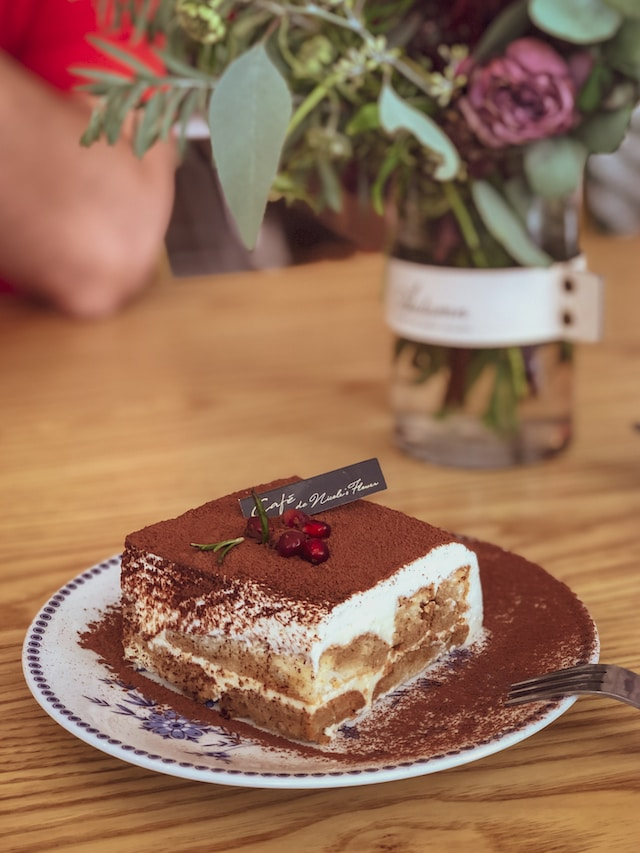

<!DOCTYPE html>
<html lang="en">
<head>
    <meta charset="UTF-8">
    <meta name="viewport" content="width=device-width, initial-scale=1.0">
    <title>Document</title>
</head>
<body>
    
</body>
</html>

<!DOCTYPE html>
<html lang="en">
<head>
    <meta charset="UTF-8">
    <meta name="viewport" content="width=device-width, initial-scale=1.0">
    <title>Tiramisu</title>
</head>
<body>
    <h1> Fried Egg </h1>
    
    <h2>Description</h2>
    <h4>ATiramisu is a classic Italian dessert consisting of layers of 
        coffee-soaked ladyfingers and creamy mascarpone cheese. It's a 
        delightful balance of flavors and textures, with the coffee-infused 
        ladyfingers providing a subtle bitterness that contrasts beautifully 
        with the smooth and velvety mascarpone cream. A dusting of cocoa powder 
        adds a finishing touch of elegance. Tiramisu is a timeless treat that 
        captures the essence of Italian indulgence in each delicious bite.
        </h4>
    <h2> Ingredients</h2>
    <ul>
        <li>6 egg yolks</li>
        <li>3/4 cup granulated sugar</li>
        <li>2/3 cup milk</li>
        <li> 1 1/4 cups heavy cream</li>
        <li>8 ounces mascarpone cheese</li>
        <li>1 teaspoon vanilla extract</li>
        <li>24 ladyfinger cookies</li>
        <li>1 1/2 cups strong brewed coffee or espresso, cooled</li>
        <li>2 tablespoons unsweetened cocoa powder</li>
        <li>Optional: 2 tablespoons coffee liqueur (e.g., Kahlua or Tia Maria) </li>
        
    </ul>
    <h2> Steps</h2>
    <ol>
        <li>
            In a mixing bowl, whisk the egg yolks and sugar until well combined and creamy.
        </li>
        <li>In a saucepan, heat the milk until it starts to steam but not boil. Gradually pour the hot milk into the egg yolk mixture, whisking continuously.</li>
        <li>Transfer the mixture back to the saucepan and cook over medium-low heat, stirring constantly, until it thickens to a custard-like consistency. Remove from heat and let it cool completely.</li>
        <li>In a separate bowl, beat the heavy cream until stiff peaks form.</li>
        <li>In another bowl, whisk the mascarpone cheese until smooth. Add the cooled custard mixture and vanilla extract, and mix until well combined.</li>
        <li>Gently fold in the whipped cream until the mixture is smooth and creamy.</li>
        <li>If using, stir the coffee liqueur into the cooled coffee or espresso.</li>
        <li>Dip each ladyfinger cookie into the coffee mixture for a few seconds, ensuring it is soaked but not overly soggy. Arrange a layer of soaked ladyfingers in the bottom of a rectangular or square baking dish.</li>
        <li>Spread half of the mascarpone cream mixture over the soaked ladyfingers, creating an even layer.</li>
        <li>Repeat the process with another layer of soaked ladyfingers and top it with the remaining mascarpone cream mixture.</li>
        <li>Sift the cocoa powder over the top to evenly cover the cream layer.</li>
        <li>Cover the dish with plastic wrap and refrigerate for at least 4 hours, or preferably overnight, to allow the flavors to meld and the dessert to set.</li>
        <li>Before serving, you can optionally dust additional cocoa powder on top for garnish.</li>
        <li>Cut into slices or squares, and serve chilled.</li>

    </ol>
</body>

</html>